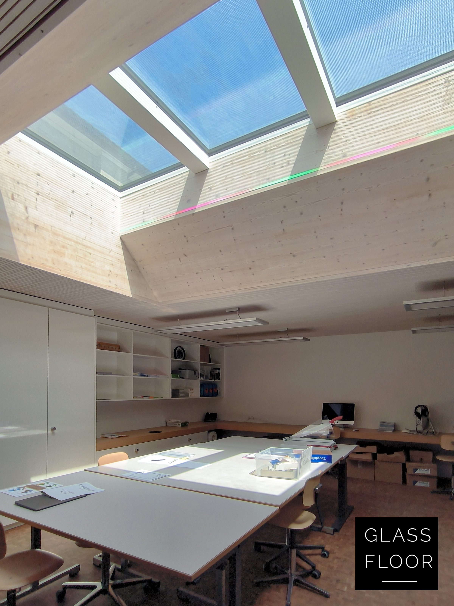
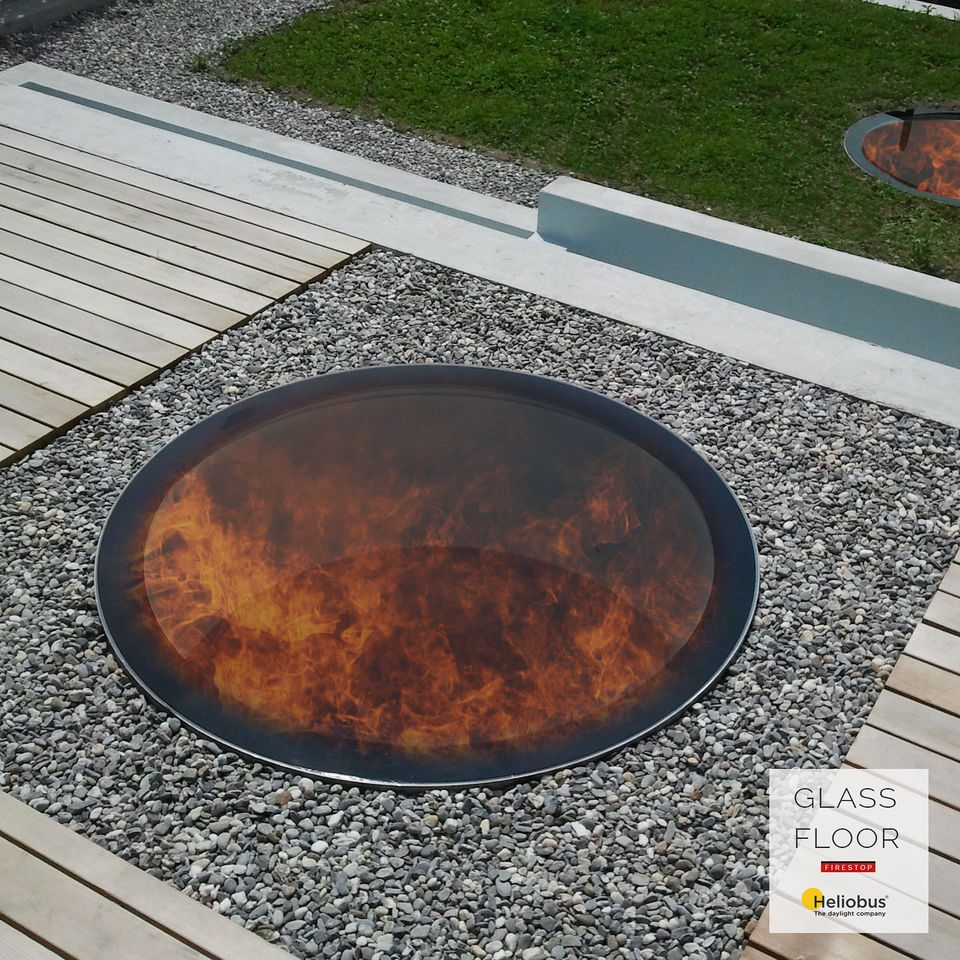
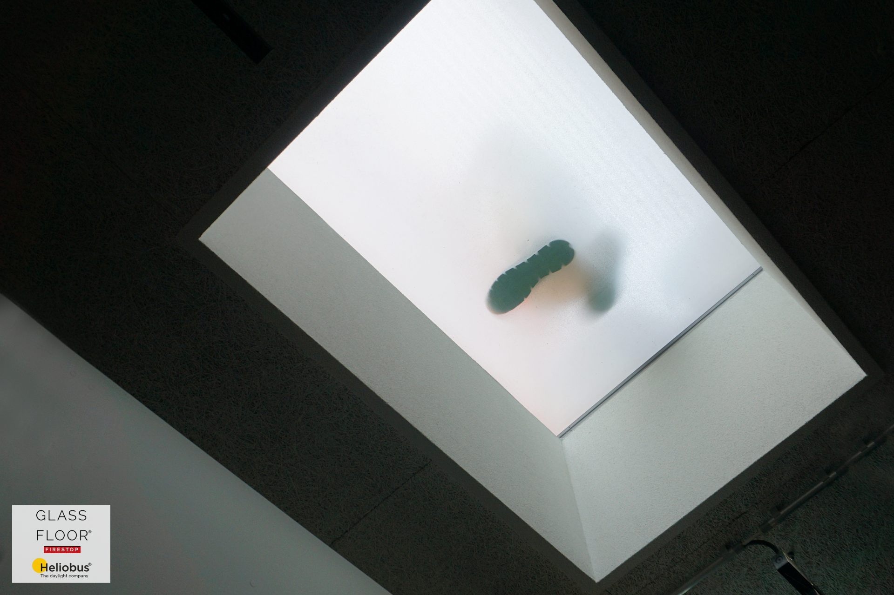

FIRESTOP: pochozí světlík jako požárně dělicí konstrukce.
Světlo mezi podlažími a požární odolnost stropu už nejsou protiklady. FIRESTOP je k dispozici ve všech třech řadách, v odolnosti od REI 30 do REI 120.
Požární odolnost REI 30 až REI 120
Pochozí světlík, který zároveň plní funkci požárně dělicí konstrukce. Podle výrobce jde o první schválené a certifikované řešení pochozího, izolovaného a protipožárního zasklení v Evropě. Používá se ve školách, nemocnicích a komerčních budovách, tedy tam, kde strop mezi podlažími musí požáru odolat.
- Požární odolnost: REI 30 až REI 120, nejvyšší třída REI 120-RF1
- Zkoušky a certifikace: podle EN 1363-1 a EN 1365-2, certifikace VKF (Švýcarsko)
- Provedení: FIRESTOP chrome, FIRESTOP pure i FIRESTOP circle
- Rozměry: standardní i zakázkové, podle skladby stropu


- FIRESTOP chrome, přiznaný nerezový rám 4 cm
- FIRESTOP pure, minimální rám 0,5 cm
- FIRESTOP circle, kruh, rám 0,3 cm
Co lidé u FIRESTOPU zjišťují.
Co je GLASSFLOOR FIRESTOP?
Pochozí světlík, který zároveň plní funkci požárně dělicí konstrukce. Podle výrobce jde o první schválené a certifikované řešení pochozího protipožárního zasklení v Evropě.
Jakou požární odolnost FIRESTOP má?
REI 30 až REI 120, nejvyšší třída je REI 120-RF1. Zkoušky proběhly podle EN 1363-1 a EN 1365-2, certifikace VKF platí ve Švýcarsku.
V jakých řadách se FIRESTOP vyrábí?
Jako FIRESTOP chrome, FIRESTOP pure i FIRESTOP circle. Rozměry jsou standardní i zakázkové, podle skladby stropu.
Kde se FIRESTOP používá?
Ve školách, nemocnicích a komerčních budovách, tedy tam, kde strop mezi podlažími musí požáru odolat a přitom má propouštět denní světlo.
Potřebujete světlo skrz požární strop?
Pošlete nám řez stropní konstrukce a požadovanou třídu odolnosti. Posoudíme, jak FIRESTOP do skladby zapojit.
Údaje o rozměrech, doplňcích a požární odolnosti vycházejí z podkladů výrobce Heliobus AG platných k 1. 9. 2026. Závazné jsou vždy podklady ke konkrétní zakázce.